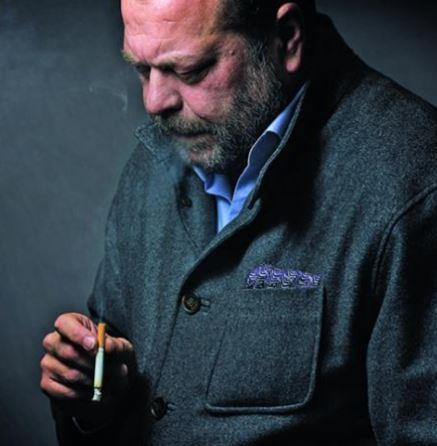
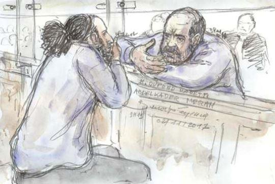

Depuis quelques décennies, les médias manifestent un goût prononcé pour certains avocats auxquels, après celle des prétoires, ils offrent une seconde tribune pour qu’ils y expriment leurs convictions profondes, lesquelles excèdent bien souvent le cadre du droit et s’apparentent plutôt à des manifestes politiques parfois virulents et, faut-il le dire, déplacés.
Parmi ces figures prisées, il en est une qui ne laisse pas de m’étonner : maître Éric Dupont-Moretti, avocat indéniablement brillant mais défenseur de causes douteuses, à mon humble avis.
Défendre l’indéfendable, d’accord, la loi assurant aux personnes poursuivies « le droit au respect de la présomption d’innocence, le droit à un avocat dès le début de la procédure, le droit à un procès équitable dans le cadre de débats contradictoires, le droit d’exercer des recours 1»
Toutefois, lorsqu’il s’agit de certains individus au pédigrée particulier, il serait bon d’exercer une défense discrète et non, tel un nouveau Jacques Vergès, avec une outrance obscène. D’ailleurs, bon sang ne saurait mentir puisque le même Vergès a jadis été défendu par Dupond-Moretti pour une affaire d’outrage.
En 2013, à la mort de l’avocat de Klaus Barbie – bourreau de Jean Moulin, entre autres –, voici ce que déclarait maître Dupond-Moretti au micro de RTL :
« C’est un honneur, quand on est avocat, d’être l'avocat du diable. On reproche à Jacques Vergès d’avoir défendu notamment des dictateurs. Mais c’est toujours un honneur pour un avocat de défendre quelqu’un que personne ne veut ou n’envisage de défendre. »
Comme ce fut pour lui un « honneur » de défendre Abdelkader Merah (frère et mentor du terroriste Mohammed Merah) ou un autre terroriste déguisé en gangster comme Omar Zemmiri (membre du gang de Roubaix, « composé d’une dizaine de voyous qui voulaient soutenir la cause des musulmans de Bosnie dans leur lutte contre les Serbes » - Le Point), Yvan Colonna (reconnu, jusqu’à preuve du contraire, coupable de l’assassinat du préfet Claude Érignac, en 1998) et, dans une moindre mesure, un ancien ministre fraudeur et menteur de surcroît (Jérôme Cahuzac) ?
Sans parler de la supercherie de l’affaire Théo Luhaka, ce dernier aussi défendu par un Dupond-Moretti surjouant alors la partition éculée des violences policières, notamment dans une tribune coécrite avec Antoine Vey, dans le JDD :
« Alors non, la police n’aura pas d’excuses. Au contraire, ce serait à elle d’en présenter.
Et ce serait légitime, de la part de ces prétendus “porte-parole” qui, multipliant les amalgames, souhaitent faire croire que c’est le procès de la police, et non celui des violences policières, qui serait en jeu. Telle n’est, en tout cas, pas la position de Théo. »
Depuis, les caméras de surveillance ont corroboré la thèse accidentelle défendue par les policiers qui étaient intervenus à Aulnay-sous-Bois. Quant au fameux Théo, il a été pris dans une autre tourmente et mis en examen pour « abus de confiance, faux et usage de faux, escroquerie en bande organisée au préjudice d’un organisme chargé d’une mission de service public » (Agence France-Presse), via une association de médiation présidée par l’un de ses frères, « Aulney Events ». Ce qui remet sérieusement en cause la probité de ce jeune homme érigé, après son interpellation, en martyr par une écrasante majorité de la classe politico-médiatique.
À noter que les affaires défendues par « Acquittator » (surnom donné à Dupond-Moretti, eu égard à ses nombreux procès gagnés) ont tout de même un fil conducteur : elles impliquent, pour un certain nombre d’entre elles, des individus qui ont, d’une manière ou d’une autre, porté atteinte à la France.
Mais le ténor du barreau ne s’en tient pas à ses tirades tonitruantes dans les tribunaux et sur les plateaux de télévision où, en février 2017, il invectivait un Éric Zemmour qui démontait méthodiquement ses « argument bidons, de bobos, de bourgeois2.»
En effet, après être apparu dans un film de Claude Lelouche (Chacun sa vie où, ironie de l’histoire, il incarnait un juge d’instruction), Dupond-Moretti s’apprête à monter sur les planches (en janvier 2019) pour prêcher sa vérité révélée : « À travers cette pièce, l’avocat veut rétablir quelques vérités. Mais il avoue aussi vouloir “modestement tirer un signal d’alarme” sur une époque et sur la liberté. » Le même qui, en 2015, dans la « Matinale » de France Inter, répondait par l’affirmative lorsqu’on lui demandait s’il fallait interdire le Front national. Autrement dit, il y a des libertés plus légitimes que d’autres pour maître Dupond-Moretti.
Récemment, l’avocat star a défendu Wojciech Janowski, jugé avec neuf autres personnes devant la cour d’assises des Bouches-du-Rhône (Aix-en-Provence) pour avoir commandité l’assassinat, en mai 2014 à Nice, de sa belle-mère, la femme d’affaires monégasque Hélène Pastor, ainsi que son chauffeur.
Les avocats de Wojciech Janowski, Me Dupond-Moretti et Me Febbraro
Là encore, Acquittator s’en est donné à cœur-joie, invectivant, dans la salle d’audience, Catherine Messineo, commandant de la police judiciaire de Nice qui avait auditionné le suspect. Il a ainsi lancé un lapidaire « pour qui vous prenez-vous ? » à l’attention de la représentante de l’ordre qui contredisait ses allégations selon lesquelles son client avait subi des pressions lors de sa garde à vue. On l’aura compris, pour cet avocat, la police est ontologiquement coupable !
Cependant, si monsieur Dupond-Moretti – qui intervenait au début du mois d’octobre à « La nuit du droit », organisée à l’Université Jean Moulin - Lyon 3 – s’égosille à défendre la notion de droit, que fait-il de la morale ? Au fait, sert-il vraiment le droit ou, ce qui semble plus probable, s’en sert-il pour énoncer une idéologie qui ne fait pas la part belle à la patrie et l’identité charnelle d’un peuple, le français en l’occurrence ?
Dernière preuve en date de ce désamour de la France, monsieur Dupond-Moretti représente Hapsatou Sy, qui dépose une plainte surréaliste contre Éric Zemmour pour des propos tenus par l’intéressé sur le plateau de l’émission « Les Terriens du Dimanche » (C8).
Dans tous les cas, il serait bien inspiré de méditer cette phrase de Nietzsche : « Ce que nous faisons dans notre intérêt ne doit nous rapporter aucun compliment d'ordre moral, ni de la part des autres, ni de la nôtre. »
Partager cette page